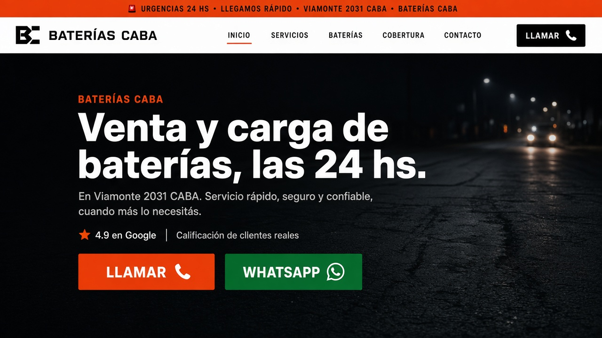
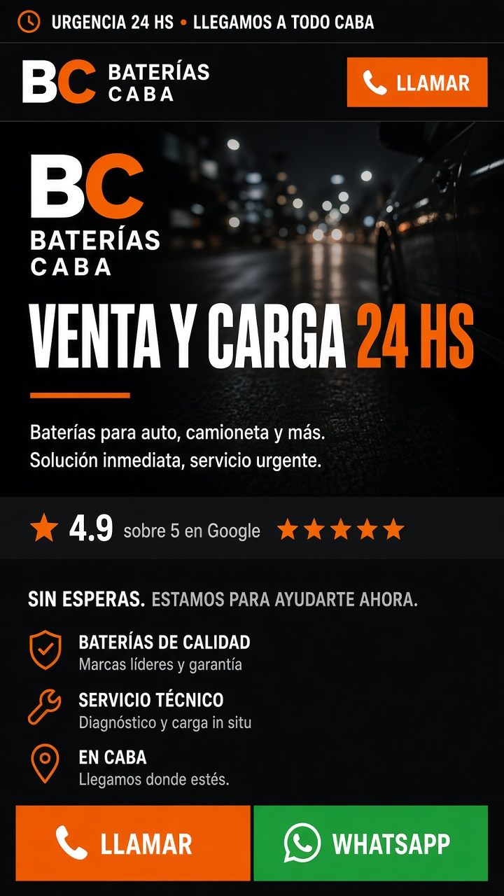
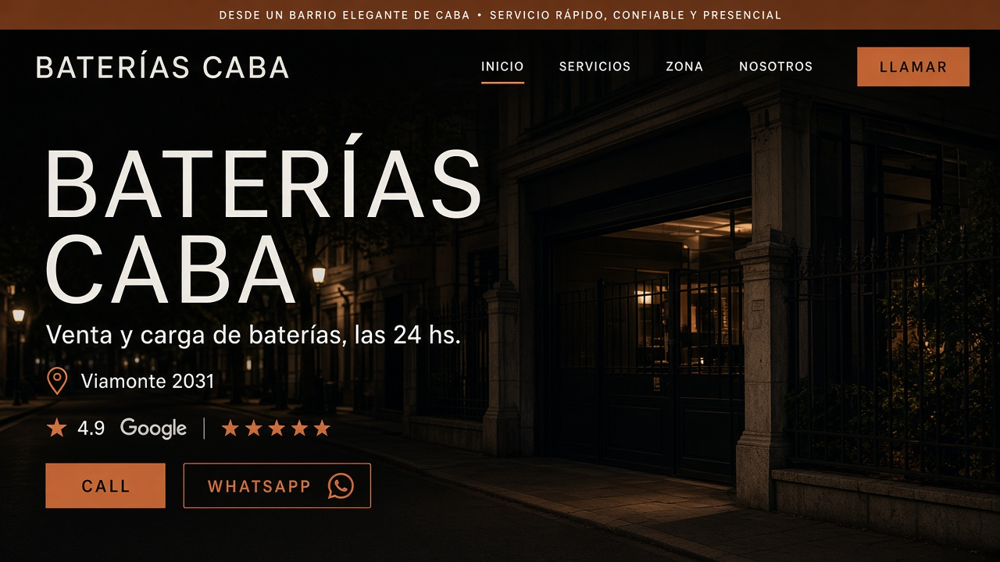
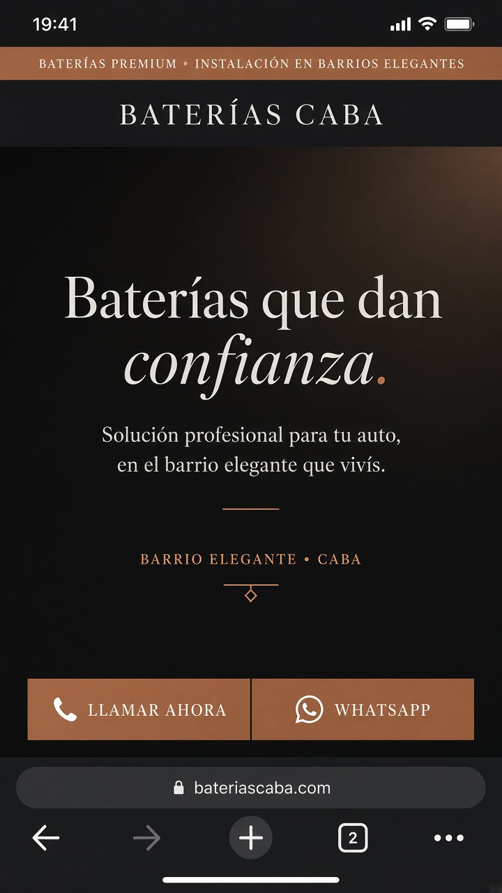
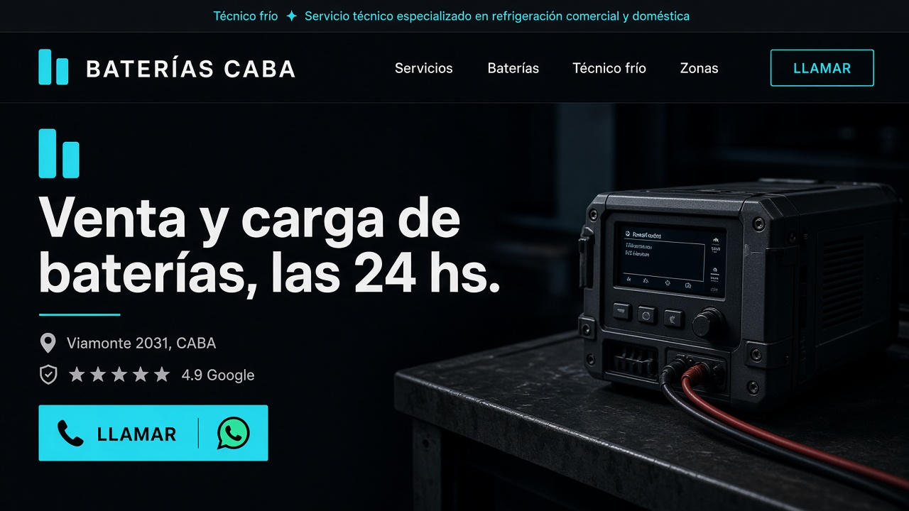
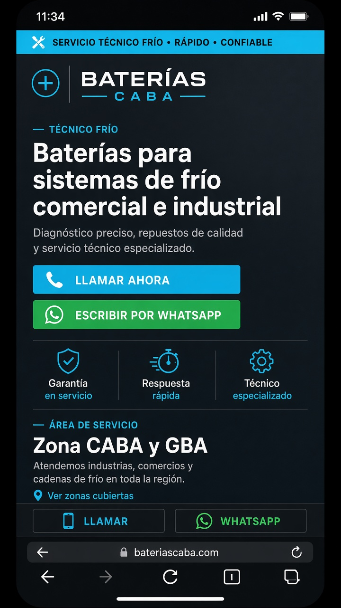
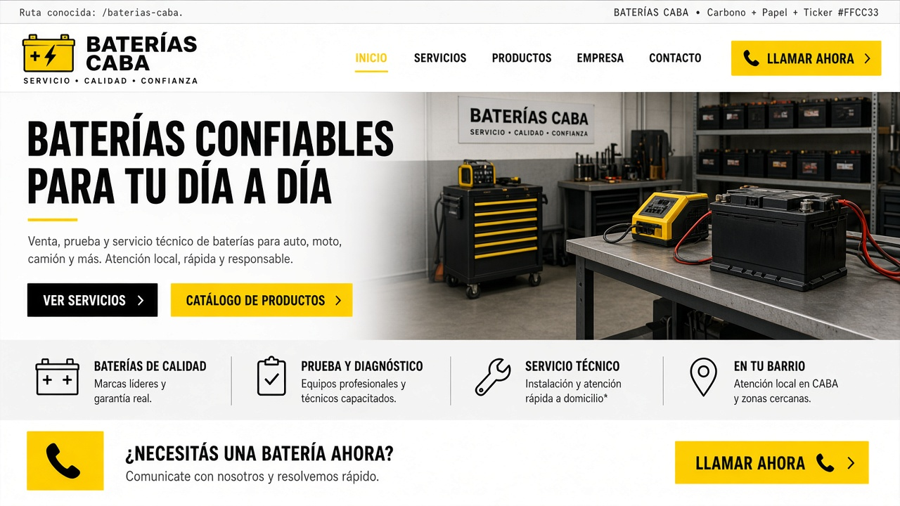

Impeccable · new-work · visualize
Tres mundos candidatos + la salida canónica del rubro. Desktop y mobile del primer viewport. Elegí uno acá y confirmalo en el chat para implementarlo en la landing.






Standing exit · estándar del rubro
